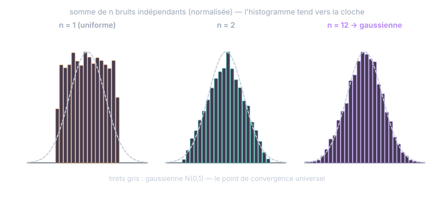

Chapitre 04
La gaussienne et le théorème central limite
Objectifs du chapitre
- Voir le théorème central limite (TCL) à l'œuvre : la somme de nombreux petits hasards devient gaussienne.
- Savoir quand l'hypothèse gaussienne est justifiée pour un capteur — et quand elle ne l'est pas.
- Connaître les propriétés de stabilité : somme, transformation linéaire.
- Retenir la conséquence pratique : deux nombres (μ, σ²) décrivent tout.
1. Le théorème central limite : le hasard qui s'additionne devient une cloche
Prenez n'importe quel petit bruit — même grossier, même non gaussien : une pièce de monnaie, une erreur de quantification uniforme, un parasite électronique. Additionnez-en beaucoup, indépendants entre eux. Le théorème central limite affirme que la somme, convenablement normalisée, suit une loi gaussienne — quelle que soit la loi de départ.

Pourquoi votre capteur est (presque) gaussien. Le bruit d'un inclinomètre n'est pas une cause : c'est la superposition de dizaines de micro-causes indépendantes — bruit thermique de chaque résistance, bruit de grenaille, micro-vibrations, arrondi du CAN… Le TCL fait le reste : la somme de tous ces petits hasards est une cloche, quelles que soient leurs lois individuelles. L'hypothèse gaussienne des datasheets et du filtre de Kalman n'est pas un choix esthétique : c'est la physique statistique du capteur.
Quand la cloche ment. Le TCL exige des causes nombreuses, petites et indépendantes. Trois situations le mettent en échec : une cause dominante non gaussienne (un parasite de commutation à 2 points discrets : la loi est bimodale) ; des aberrants (fausse détection caméra : la vraie loi a des « queues lourdes » — d'où le gating, car le filtre gaussien pondère mal ces événements) ; une saturation (capteur en butée : la loi s'écrase contre la limite). Réflexe : tracer l'histogramme des mesures au repos (cours Kalman, ch. 16) — si ce n'est pas une cloche, comprendre pourquoi avant de remplir R.
2. La loi gaussienne : deux paramètres, tout le comportement
La densité gaussienne N(μ, σ²) :
Tout est dans l'exposant : un écart au carré, pénalisé d'autant plus vite qu'on s'éloigne de μ, à l'échelle σ. Le point capital n'est pas la formule, c'est ceci : la gaussienne est entièrement déterminée par (μ, σ²). Pas de troisième paramètre, pas de forme cachée. Connaître la moyenne et la variance, c'est connaître toute la loi — les 68/95/99,7 du chapitre 2, les quantiles, tout.
C'est ce qui rend possible un filtre de Kalman calculable : suivre une croyance gaussienne, c'est ne suivre que (x̂, P). Si les lois pouvaient prendre des formes arbitraires, il faudrait suivre une fonction entière à chaque cycle (c'est ce que fait, à grands frais, un filtre particulaire).
3. La stabilité : la gaussienne survit aux opérations linéaires
Deuxième vertu, aussi importante : la famille gaussienne est stable. Les opérations qu'on fait subir aux signaux — sommer, amplifier, combiner — ne la font pas sortir de la famille.
X₁ ⊥ X₂ gaussiennes ⟹ X₁ + X₂ ∼ N(μ₁ + μ₂, σ₁² + σ₂²)
La somme de deux gaussiennes indépendantes est gaussienne, exactement — moyennes ajoutées, variances ajoutées (l'additivité du chapitre 3, plus la conservation de la forme). Là où le TCL dit « toute somme devient gaussienne à la longue », la stabilité dit « une somme de gaussiennes l'est immédiatement ». Les deux se renforcent : le monde converge vers la gaussienne, et une fois dedans, on n'en sort plus.
Retour sur la chaîne de mesure. L'exercice 2 du chapitre 3 (capteur + CAN + EMI) prend tout son sens : chaque source est ~gaussienne (TCL), leur somme est gaussienne (stabilité), de variance la somme des variances. La chaîne complète reste donc décrite par un seul σ — celui qu'on met au carré dans R. Sans la stabilité, « le bruit total du capteur » n'aurait même pas de forme simple.
La stabilité vaut plus généralement pour toute transformation linéaire d'un vecteur gaussien (le sandwich AΣAᵀ), pour la marginalisation et pour le conditionnement — les « trois clôtures » détaillées au chapitre 3 du cours Kalman, qui font exactement tourner la prédiction et la correction du filtre.
4. Ce que la gaussienne ne pardonne pas
Une seule opération courante fait sortir de la famille : la non-linéarité. Passer une gaussienne dans un atan, un sinus, une saturation produit une loi qui n'est plus gaussienne — c'est tout le problème de l'EKF (cours Kalman, ch. 14), qui rattrape le coup en linéarisant localement. Retenez la ligne de partage : linéaire = on reste gaussien, exactement ; non-linéaire = on approxime.
Exercices
Exercice 1 — Le CAN et le TCL
L'erreur de quantification d'un CAN est uniforme sur [−q/2, +q/2], de variance q²/12 — et pas du tout gaussienne. Votre chaîne moyenne 16 échantillons successifs avant de livrer une valeur. Que peut-on dire de la loi de l'erreur de quantification moyennée, et de sa variance ?
Voir la solution
La moyenne de 16 erreurs ~indépendantes est une somme normalisée : par le TCL (déjà bien engagé à n = 16, cf. figure 4.1 où n = 12 suffit), elle est quasi gaussienne. Sa variance : additivité puis division par 16² — Var = 16·(q²/12)/16² = q²/(12·16), soit un écart-type divisé par 4. Moralité doublement utile : le moyennage gaussianise les bruits non gaussiens et les réduit en 1/√N (chapitre 8). C'est pour cela qu'on peut presque toujours traiter le bruit de quantification comme un petit bruit gaussien de plus.
Exercice 2 — Fusion de deux bruits, en gaussien
Deux inclinomètres indépendants, σ₁ = 0,3° et σ₂ = 0,4°, visent le même angle. (a) Quelle est la loi de la différence Z₁ − Z₂ de leurs lectures (capteurs sains) ? (b) Un jour, cette différence vaut 2,1°. Diagnostic ?
Voir la solution
- (a) Différence de gaussiennes indépendantes = gaussienne (stabilité, avec a = −1 sur la seconde) : moyenne 0 (elles mesurent le même angle, les biais étant supposés calibrés), variance 0,3² + 0,4² = 0,25 → σ_diff = 0,5°. Remarquez : les variances s'ajoutent même pour une différence (le signe part au carré).
- (b) 2,1° = 4,2σ : probabilité ~2/100 000 par le seul bruit. L'un des deux capteurs est en défaut (ou décalé mécaniquement). Ce test de l'écart entre capteurs redondants — seuillé en kσ de la loi de la différence — est un diagnostic standard, et un petit avant-goût de la NIS.
Exercice 3 — Deux nombres suffisent… quand ?
Vrai ou faux : « pour n'importe quelle VA, connaître μ et σ² détermine la probabilité de dépasser μ + 2σ ». Justifiez, et dites ce que ça change pour un capteur.
Voir la solution
Faux en général : deux lois peuvent partager (μ, σ²) et différer partout ailleurs (une bimodale et une cloche, par exemple). Les 68/95/99,7 sont des propriétés de la gaussienne, pas de tout couple (μ, σ²). C'est vrai si la loi est gaussienne — et c'est précisément pourquoi on vérifie l'histogramme au repos avant de raisonner en ±kσ : le seuillage d'aberrants, la bande x̂ ± 2√P, le pk-pk/6 supposent tous la cloche. (Il existe une borne valable pour toute loi — l'inégalité de Tchebychev, P(|Z−μ| ≥ kσ) ≤ 1/k² — mais elle est bien plus lâche : ≤ 25 % à 2σ, contre 5 % pour la gaussienne.)
Récapitulatif
- TCL : la somme de nombreux petits hasards indépendants devient gaussienne, quelle que soit leur loi. C'est la raison physique de l'omniprésence de la cloche dans les capteurs.
- Limites du TCL : cause dominante, aberrants (queues lourdes), saturation → vérifier l'histogramme avant de croire à la cloche.
- La gaussienne est entièrement décrite par (μ, σ²) → un filtre n'a à suivre que (x̂, P).
- Stabilité : aX+b et X₁+X₂ (indépendantes) restent gaussiennes — moyennes ajoutées, variances ajoutées. Linéaire = exact ; non-linéaire = on sort de la famille (EKF).
- Moyenner gaussianise (TCL) et réduit (1/√N) : deux services rendus d'un coup.